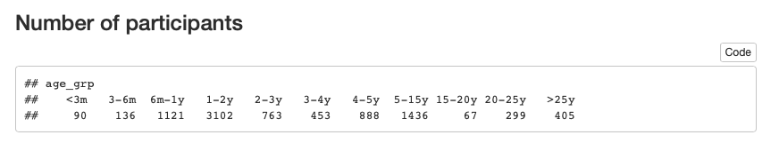

- Thank you to NICHD, NIMH, NIDA, NIH OD, NSF, the Alfred P. Sloan Foundation, the James S. McDonnell Foundation, the LEGO Foundation, and the John S. Templeton Foundation for support
2023-02-01 08:14:14
Acknowledgements


Agenda
- Prelude
- The 4 R’s
- Integrity, norms, & counternorms
- Toward a more robust science
- Tools for reproducible science
- Your open science future
Prelude
What proportion of findings in the published scientific literature (in the fields you care about) are actually true?
- 100%
- 90%
- 70%
- 50%
- 30%
How do we define what “actually true” means?
Is there a reproducibility crisis in science?
- Yes, a significant crisis
- Yes, a slight crisis
- No crisis
- Don’t know
![[[@baker_1500_2016]](http://doi.org/10.1038/533452a)](http://www.nature.com/polopoly_fs/7.36716.1469695923!/image/reproducibility-graphic-online1.jpeg_gen/derivatives/landscape_630/reproducibility-graphic-online1.jpeg)

Have you heard of the ‘reproducibility crisis’ in science?

Is there a reproducibility crisis in your area of research?
![[[@baker_1500_2016]](http://doi.org/10.1038/533452a)](http://www.nature.com/polopoly_fs/7.36718.1464174471!/image/reproducibility-graphic-online3.jpg_gen/derivatives/landscape_630/reproducibility-graphic-online3.jpg)
Does this surprise you? Why or why not?
![[[@baker_1500_2016]](http://doi.org/10.1038/533452a)](http://www.nature.com/polopoly_fs/7.36719.1464174488!/image/reproducibility-graphic-online4.jpg_gen/derivatives/landscape_630/reproducibility-graphic-online4.jpg)
The 4 R’s
![Table 1 from [[@Gennetian2022-us]](https://doi.org/10.1146/annurev-devpsych-120920-042335)](img/gennetian-etal-2022-table-01.png)
Table 1 from (Gennetian, Frank, & Tamis-LeMonda, 2022)
“…Reproducibility refers to testing the reliability of a prior finding using the same data and the same analysis strategy (Natl. Acad. Sci. Eng. Med. 2019)…In principle, all reported evidence should be reproducible. If someone applies the same analysis to the same data, the same result should occur…”
Methods reproducibility
- Goodman, Fanelli, & Ioannidis (2016)
- Enough details about materials & methods recorded (& reported)
- Same results with same materials & methods
“A process reproducibility failure occurs when the original analysis cannot be repeated because of the unavailability of data, code, information needed to recreate the code, or necessary software or tools.”

Results reproducibility
- Goodman et al. (2016)
- Same results from independent study
- (Camerer et al., 2018; Collaboration, 2015; Whitt, Miranda, & Tullett, 2022)
Inferential reproducibility
- Goodman et al. (2016)
- Same inferences from one or more studies or reanalyses
A 5th ‘R’
“…Robustness refers to testing the reliability of a prior finding using the same data and a different analysis strategy…”
- “Many analysts”: (Botvinik-Nezer et al., 2020; Silberzahn et al., 2018)
Integrity, norms, & counternorms
“The first principle is that you must not fool yourself—and you are the easiest person to fool. So you have to be very careful about that. After you’ve not fooled yourself, it’s easy not to fool other scientists.”
“…I’m talking about a specific, extra type of integrity that is not lying, but bending over backwards to show how you’re maybe wrong, that you ought to do when acting as a scientist. And this is our responsibility as scientists, certainly to other scientists, and I think to laymen.”
Robert Merton (1942) and scientific norms
- universalism: scientific validity is independent of sociopolitical status/personal attributes of its participants
- communalism: common ownership of scientific goods (intellectual property)
- disinterestedness: scientific institutions benefit a common scientific enterprise, not specific individuals
- organized skepticism: claims should be exposed to critical scrutiny before being accepted
How widely do scientists follow these norms?
- Among NYU Steinhardt Applied Psychology grads polled in January/February 2023
- Comparison with Penn State PSYCH 490 students
- Questions asked

1: ‘not at all’, 5: ‘a great deal’


“…psychologists tend to treat other peoples’ theories like toothbrushes; no self-respecting individual wants to use anyone else’s.”
“The toothbrush culture undermines the building of a genuinely cumulative science, encouraging more parallel play and solo game playing, rather than building on each other’s directly relevant best work.”
Do you agree or disagree with Mischel?
“We conducted the Reproducibility Project: Cancer Biology to investigate the replicability of preclinical research in cancer biology. The initial aim of the project was to repeat 193 experiments from 53 high-impact papers…However, the various barriers and challenges we encountered while designing and conducting the experiments meant that we were only able to repeat 50 experiments from 23 papers…This experience draws attention to a basic and fundamental concern about replication – it is hard to assess whether reported findings are credible.”
Towards a more robust psychological science
Munafò, M. R., Nosek, B. A., Bishop, D. V. M., Button, K. S., Chambers, C. D., Sert, N. P. du, Simonsohn, U., Wagenmakers, E.-J., Ware, J. J. & Ioannidis, J. P. A. (2017). A manifesto for reproducible science. Nature Human Behaviour, 1, 0021. https://doi.org/10.1038/s41562-016-0021
](https://media.springernature.com/full/springer-static/image/art%3A10.1038%2Fs41562-016-0021/MediaObjects/41562_2016_Article_BFs415620160021_Fig1_HTML.jpg)
](img/munafo-table-1.png)
Do we have the power we need?
“Assuming a realistic range of prior probabilities for null hypotheses, false report probability is likely to exceed 50% for the whole literature.”
](img/marek-et-al-2022.png)
Some practical solutions (Gilmore, Kennedy, & Adolph, 2018)
- Build upon existing (secondary) data and collect (much) larger samples
- Share protocols and complete methods (use video)
- Share data (FAIRly)
- Findable, Accessible, Inter-operable, Re-usable, (Wilkinson et al., 2016)
- Script analyses and share analysis code
- Cite others’ data, protocols, methods, analysis code
- Preregister data analyses (confirmatory vs. exploratory)
- Use version control
What to share
- Procedure manuals (even IRB applications!)
How to share
- With ethics board/IRB approval
- With participant permission
- Possibly with a restricted audience
- openly shared != public
Where to share data?
- Penn State faculty responses to 2023 survey
- Lab website versus…
- Supplemental information with journal article versus…
- Data repository
](img/gennetian-etal-2022-fig-01.png)
Figure 1 from Gennetian et al. (2022)

Databrary volumes from https://gilmore-lab.github.io/databrary-analytics/weekly/databrary_weekly_report.html

Demographic info from https://gilmore-lab.github.io/databrary-analytics/participant-demographics/participant-demog-report.html
When to share
- Paper goes out for review or is published
- Some journals in some fields require post-acceptance “verification”
- Grant ends
Never
How might these practices impact your research?
Challenges, questions, & concerns
How do we protect participants against harm?
Does open science pose risks to career enhancement and development?
Does open science limit exploration and discovery?
Does open science raise barriers for inclusion and diversity in who conducts science?
“Communication scholarship is increasingly adopting Open Science (OS) practices: sharing code and data, pre-registering studies, and conducting replications. Yet, scholars have also critiqued how the OS movement might create barriers and exacerbate inequalities. As the field aims to better support a more diverse body of scholars, it is imperative to understand who participates in OS.”
“In this pre-registered study, we look at one important area of inequality, author gender, among rates of articles that adopt OS practices versus articles unaffiliated with OS practices. Using computational methods, we categorize author gender and use of OS practices across 4,561 quantitative communication articles.”
“We find prevalent gender gaps, such that women are significantly less likely to lead, and co-author, papers that adopt OS practices relative to papers unaffiliated with OS. These gender gaps are unexplained by journal-level differences or publication year. Our results highlight a tension between the aims of the OS movement and efforts to increase inclusivity in the field. A commitment to truly open science requires a commitment to solving participation gaps. Our work aims to spark a conversation towards better, and more equitable, communication research.”
How do we balance costs and benefits?
Your open science future…
“The advancement of detailed and diverse knowledge about the development of the world’s children is essential for improving the health and well-being of humanity…”
“We regard scientific integrity, transparency, and openness as essential for the conduct of research and its application to practice and policy…”
“…the principles of human subject research require an analysis of both risks and benefits…such an analysis suggests that researchers may have a positive duty to share data in order to maximize the contribution that individual participants have made.”


Tools for reproducible science
What is version control and why use it?

- thesis_new.docx
- thesis_new.new.docx
- thesis_new.new.final.docx
vs.
- thesis_2019-01-15v01.docx
- thesis_2019-01-15v02.docx
- thesis_2019-01-16v01.docx
Version control systems
- Used in large-scale software engineering
- svn, bitbucket, git
- GitHub
How I use GitHub
- Every project gets a repository
- Work locally, commit (save & increment version), push to GitHub
- Talks, classes, software, analyses, web sites

FAIR data principles
Data should be…
- Findable
- Accessible
- Interoperable
- Reusable
- Data in interoperable formats (.txt or .csv)
- Scripted, automated = minimize human-dependent steps.
- Well-documented
- Kind to your future (forgetful) self
- Transparent to me & colleagues == transparent to others
Scripted analyses
- SPSS, SAS, R, Python
- Jupyter notebooks
- R Markdown via RStudio
# Import/gather data # Clean data # Visualize data # Analyze data # Report findings
# Import data
my_data <- read.csv("path/2/data_file.csv")
# Clean data
my_data$gender <- tolower(my_data$gender) # make lower case
...
# Import data
source("R/Import_data.R") # source() runs scripts, loads functions
# Clean data
source("R/Clean_data.R")
# Visualize data
source("R/Visualize_data.R")
...
But my SPSS syntax file already does this
- Great! How are you sharing these files?
- (And how much would SPSS cost you if you had to buy it yourself?)
But I prefer {Python, Julia, Ruby, MATLAB, …}
- Great! Let’s talk about R Markdown
Reproducible research with R Markdown
- Add-on package to R, developed by the RStudio team
- Combine text, code, images, video, equations into one document
- Render into PDF, MS Word, HTML (web page or site, slides, a blog, or even a book)
- R Markdown documentation; online tutorial; Mike Frank and Chris Hartgerink’s tutorial
- Similar to Mathematica notebooks, Jupyter notebooks
x <- rnorm(n = 100, mean = 0, sd = 1) hist(x)
The mean is -0.0075572, the range is [-2.1027382, 1.9204212].
Ways to use R Markdown
Ways to use R Markdown
An alternative to R Markdown
- Jupyter notebooks, Jupyter Lab
- Initially Python-focused, but has broadened to include other languages
Registered reports and pre-registration

Why preregister?
- Nosek: “Don’t fool yourself” (“…and you are the easiest to fool” – R. Feynmann)
- Separate confirmatory from exploratory analyses
- Confirmatory (hypothesis-driven): p-hacking matters
- Exploratory: p-values hard(er) to interpret
How/where


Skeptics and converts
Susan Goldin-Meadow (skeptic), “Why pregistration makes me nervous”
Mike Frank (former skeptic, now advocate), “Pregister everything”
Preregistration can constrain the data analysis process, but…
“To investigate whether,in psychology, preregistration lives up to that potential, we focused on all articles published in Psychological Science with a preregistered badge between February 2015 and November 2017, and assessed the adherence to their corresponding preregistration plans. We observed deviations from the plan in all studies, and, more importantly, in all but one study, at least one of these deviations was not fully disclosed.”
Large-scale replication studies
Many Labs
](https://econtent.hogrefe.com/na101/home/literatum/publisher/hogrefe/journals/content/zsp/2014/zsp.2014.45.issue-3/1864-9335_a000178/20150727/images/large/zsp_45_3_142_fig1a.jpeg)
Reproducibility Project: Psychology (RPP)
“…The mean effect size (r) of the replication effects…was half the magnitude of the mean effect size of the original effects…”
“…39% of effects were subjectively rated to have replicated the original result…”
![[[@Camerer2018-tr]](https://www.nature.com/articles/s41562-018-0399-z)](https://mfr.osf.io/export?url=https://osf.io/fg4d3/?action=download%26mode=render%26direct%26public_file=True&initialWidth=698&childId=mfrIframe&parentTitle=OSF+%7C+F1+-+EffectSizes.png&parentUrl=https://osf.io/fg4d3/&format=2400x2400.jpeg)
![[[@Camerer2018-tr]](https://www.nature.com/articles/s41562-018-0399-z)](https://mfr.osf.io/export?url=https://osf.io/8pc9x/?action=download%26mode=render%26direct%26public_file=True&initialWidth=698&childId=mfrIframe&parentTitle=OSF+%7C+F4+-+PeerBeliefs.png&parentUrl=https://osf.io/8pc9x/&format=2400x2400.jpeg)
{kind=link}
If it’s too good to be true, it probably isn’t
Resources
This talk was produced on 2023-02-01 in RStudio using R Markdown and the ioslides framework. The code and materials used to generate the slides may be found at https://gilmore-lab.github.io/2023-02-01-nyu-steinhardt/. Information about the R Session that produced the code is as follows:
## R version 4.2.1 (2022-06-23) ## Platform: x86_64-apple-darwin17.0 (64-bit) ## Running under: macOS Monterey 12.6.2 ## ## Matrix products: default ## LAPACK: /Library/Frameworks/R.framework/Versions/4.2/Resources/lib/libRlapack.dylib ## ## locale: ## [1] en_US.UTF-8/en_US.UTF-8/en_US.UTF-8/C/en_US.UTF-8/en_US.UTF-8 ## ## attached base packages: ## [1] stats graphics grDevices utils datasets methods ## [7] base ## ## other attached packages: ## [1] magrittr_2.0.3 googledrive_2.0.0 forcats_0.5.2 ## [4] stringr_1.5.0 dplyr_1.0.10 purrr_0.3.5 ## [7] readr_2.1.3 tidyr_1.2.1 tibble_3.1.8 ## [10] ggplot2_3.4.0 tidyverse_1.3.2 ## ## loaded via a namespace (and not attached): ## [1] httr_1.4.4 sass_0.4.4 ## [3] bit64_4.0.5 vroom_1.6.0 ## [5] jsonlite_1.8.4 viridisLite_0.4.1 ## [7] modelr_0.1.9 bslib_0.4.2 ## [9] assertthat_0.2.1 askpass_1.1 ## [11] highr_0.9 googlesheets4_1.0.1 ## [13] cellranger_1.1.0 yaml_2.3.6 ## [15] pillar_1.8.1 backports_1.4.1 ## [17] glue_1.6.2 digest_0.6.31 ## [19] rvest_1.0.3 colorspace_2.0-3 ## [21] htmltools_0.5.4 pkgconfig_2.0.3 ## [23] broom_1.0.1 haven_2.5.1 ## [25] scales_1.2.1 webshot_0.5.4 ## [27] svglite_2.1.0 tzdb_0.3.0 ## [29] timechange_0.2.0 openssl_2.0.5 ## [31] generics_0.1.3 farver_2.1.1 ## [33] ellipsis_0.3.2 cachem_1.0.6 ## [35] withr_2.5.0 cli_3.6.0 ## [37] crayon_1.5.2 readxl_1.4.1 ## [39] evaluate_0.17 fs_1.6.0 ## [41] fansi_1.0.3 xml2_1.3.3 ## [43] tools_4.2.1 hms_1.1.2 ## [45] gargle_1.2.1 lifecycle_1.0.3 ## [47] munsell_0.5.0 reprex_2.0.2 ## [49] kableExtra_1.3.4 compiler_4.2.1 ## [51] jquerylib_0.1.4 systemfonts_1.0.4 ## [53] rlang_1.0.6 grid_4.2.1 ## [55] rstudioapi_0.14 rappdirs_0.3.3 ## [57] labeling_0.4.2 rmarkdown_2.17 ## [59] gtable_0.3.1 DBI_1.1.3 ## [61] curl_5.0.0 R6_2.5.1 ## [63] lubridate_1.9.0 knitr_1.40 ## [65] fastmap_1.1.0 bit_4.0.4 ## [67] utf8_1.2.2 stringi_1.7.12 ## [69] parallel_4.2.1 vctrs_0.5.2 ## [71] dbplyr_2.2.1 tidyselect_1.2.0 ## [73] xfun_0.34
References
Artner, R., Verliefde, T., Steegen, S., Gomes, S., Traets, F., Tuerlinckx, F., & Vanpaemel, W. (2021). The reproducibility of statistical results in psychological research: An investigation using unpublished raw data. Psychological Methods, 26(5), 527–546. https://doi.org/10.1037/met0000365
Baker, M. (2016). 1,500 scientists lift the lid on reproducibility. Nature News, 533(7604), 452. https://doi.org/10.1038/533452a
Botvinik-Nezer, R., Holzmeister, F., Camerer, C. F., Dreber, A., Huber, J., Johannesson, M., … Schonberg, T. (2020). Variability in the analysis of a single neuroimaging dataset by many teams. Nature, 582(7810), 84–88. https://doi.org/10.1038/s41586-020-2314-9
Brakewood, B., & Poldrack, R. A. (2013). The ethics of secondary data analysis: Considering the application of belmont principles to the sharing of neuroimaging data. NeuroImage, 82, 671–676. https://doi.org/10.1016/j.neuroimage.2013.02.040
Camerer, C. F., Dreber, A., Holzmeister, F., Ho, T.-H., Huber, J., Johannesson, M., … Wu, H. (2018). Evaluating the replicability of social science experiments in nature and science between 2010 and 2015. Nature Human Behaviour, 1. https://doi.org/10.1038/s41562-018-0399-z
Collaboration, O. S. (2015). Estimating the reproducibility of psychological. Science, 349(6251), aac4716. https://doi.org/10.1126/science.aac4716
Errington, T. M., Denis, A., Perfito, N., Iorns, E., & Nosek, B. A. (2021). Challenges for assessing replicability in preclinical cancer biology. eLife, 10, e67995. https://doi.org/10.7554/eLife.67995
Feynman, R. P. (1974). Cargo cult science. Retrieved from https://calteches.library.caltech.edu/51/2/CargoCult.htm
Gennetian, L. A., Frank, M. C., & Tamis-LeMonda, C. S. (2022). Open science in developmental science. Annual Review of Developmental Psychology, 4(1), 377–397. https://doi.org/10.1146/annurev-devpsych-120920-042335
Gilmore, R. O., Kennedy, J. L., & Adolph, K. E. (2018). Practical solutions for sharing data and materials from psychological research. Advances in Methods and Practices in Psychological Science, 1(1), 121–130. https://doi.org/10.1177/2515245917746500
Goodman, S. N., Fanelli, D., & Ioannidis, J. P. A. (2016). What does research reproducibility mean? Science Translational Medicine, 8(341), 341ps12–341ps12. https://doi.org/10.1126/scitranslmed.aaf5027
Langrock, I., & Jovanova, M. (2022, November). Gender gaps in communication’s open science movement. https://doi.org/10.2139/ssrn.4283210
Marek, S., Tervo-Clemmens, B., Calabro, F. J., Montez, D. F., Kay, B. P., Hatoum, A. S., … Dosenbach, N. U. F. (2022). Reproducible brain-wide association studies require thousands of individuals. Nature, 603(7902), 654–660. https://doi.org/10.1038/s41586-022-04492-9
Mischel, W. (2011). Becoming a cumulative science. APS Observer, 22(1). Retrieved from https://www.psychologicalscience.org/observer/becoming-a-cumulative-science
Munafò, M. R., Nosek, B. A., Bishop, D. V. M., Button, K. S., Chambers, C. D., Sert, N. P. du, … Ioannidis, J. P. A. (2017). A manifesto for reproducible science. Nature Human Behaviour, 1, 0021. https://doi.org/10.1038/s41562-016-0021
Nosek, B. A., Hardwicke, T. E., Moshontz, H., Allard, A., Corker, K. S., Dreber, A., … Vazire, S. (2022). Replicability, robustness, and reproducibility in psychological science. Annual Review of Psychology, 73(2022), 719–748. https://doi.org/10.1146/annurev-psych-020821-114157
NYU Health Sciences Library. (2013, November). Data sharing and management snafu in 3 short acts (higher quality). Youtube. Retrieved from https://www.youtube.com/watch?v=66oNv_DJuPc
Silberzahn, R., Uhlmann, E. L., Martin, D. P., Anselmi, P., Aust, F., Awtrey, E., … Nosek, B. A. (2018). Many analysts, one data set: Making transparent how variations in analytic choices affect results. Advances in Methods and Practices in Psychological Science, 1(3), 337–356. https://doi.org/10.1177/2515245917747646
Szucs, D., & Ioannidis, J. P. A. (2017). Empirical assessment of published effect sizes and power in the recent cognitive neuroscience and psychology literature. PLoS Biology, 15(3), e2000797. https://doi.org/10.1371/journal.pbio.2000797
Whitt, C. M., Miranda, J. F., & Tullett, A. M. (2022). History of replication failures in psychology. In W. O’Donohue, A. Masuda, & S. Lilienfeld (Eds.), Avoiding questionable research practices in applied psychology (pp. 73–97). Cham: Springer International Publishing. https://doi.org/10.1007/978-3-031-04968-2\_4
Wilkinson, M. D., Dumontier, M., Aalbersberg, I. J. J., Appleton, G., Axton, M., Baak, A., … Mons, B. (2016). The FAIR guiding principles for scientific data management and stewardship. Scientific Data, 3, 160018. https://doi.org/10.1038/sdata.2016.18